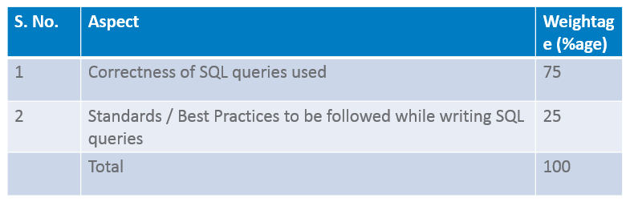

Guidelines
Project Objectives
InstaDB Analysis
Project Evaluation Guidelines
Coverage
This project is optional and is meant for practice at the end of Module 5
Learners are suggested to use Oracle for project development
It is an extension of Project III – InstaDB Integration
Suggested duration: 8 person-hours
Suggested team size: 1
After completing this project, a learner should be able to understand and implement the advance database operations using SQL queries.
Advanced Database Operations and clauses in SQL
Joins – Inner Join, Outer Join and Self Join
Sub Queries – Independent and Correlated
Refer to Project III – InstaDB Integration where the following queries were implemented using SQL and Python code.
Max Likes - Which of my pictures (picture ids) has received maximum likes?
Min Likes - Which of my pictures (picture ids) has received minimum likes?
Who liked most - Who (user id) has liked my pictures most?
Music pictures - Show all pictures related to music.
Popular Tag - What is the name of most popular tag?
Most liked User - Whose pictures (user id) have been liked most?
Old Tagging - Tag my pictures older than 3 years “Old”
Delete Inactive Users - Delete inactive users i.e. who have not done activity for past 1 year
This project is to implement these queries using SQL only and realize the power of JOINs and Sub-queries learnt in module-5
Queries
Max Likes - Which of my pictures (picture ids) has received maximum likes?
Min Likes - Which of my pictures (picture ids) has received minimum likes?
Who liked most - Who (user id) has liked my pictures most?
Music pictures - Show all pictures related to music.
Popular Tag - What is the name of most popular tag?
Most liked User - Whose pictures (user id) have been liked most?
Old Tagging - Tag my pictures older than 3 years “Old”
Delete Inactive Users - Delete inactive users i.e. who have not done activity for past 1 year
